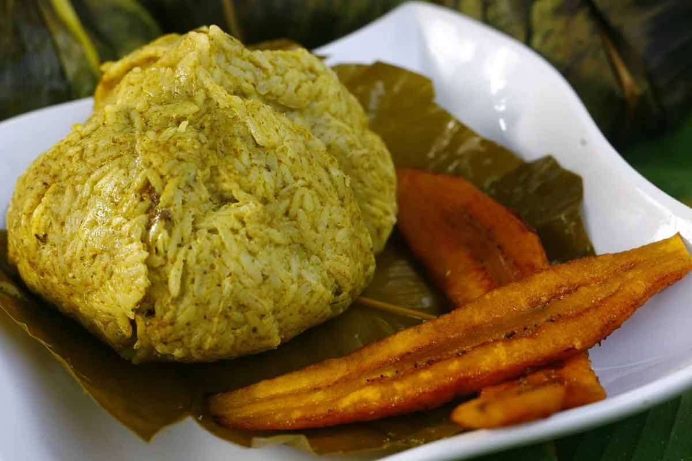

Comida tipica (Sierra, Selva y Costa)
Juane

Ingredientes:
- 8 presas de gallina o pollo
- 8 aceitunas
- 8 huevos
- 1 ½ Kilos de arroz
- 4 tazas de agua
- 1 cucharada de ajo molido
- 1/4 de cucharita de orégano
- 2 hojas de laurel
- 2 cebollas
- ½ taza de manteca de cerdo
- 16 hojas de bijao dos por porción
- Sal, pimienta y comino al gusto
- 1 cucharada de palillo o azafrán
- 1 cubito de caldo de gallina
preparación:
- En un olla para el arroz pon un poco de aceite y ajo molido, vierte el agua y déjala allí hasta que esté por hervir, agrega el arroz y déjalo cocinar.
- Teniendo tu arroz listo, colócalo sobre una fuente y déjalo enfriar a temperatura ambiente. Esta fuente será el lugar en donde se hará la combinación.
- Cocina los 8 huevos en una olla pequeña y sumérgelos con un poco de sal. Teniendo los huevos cocidos resérvalos a un costado.
- En una sartén derrite la manteca de chancho y añade el ajo. Dora la cebolla y agrega el palillo, el cubito de caldo de gallina, orégano, laurel y sal.
- Teniendo el aderezo en la sartén. Agrega las presas de pollo y fríelas hasta que estén selladas. Vierte agua para que las presas hiervan durante media hora a fuego medio.
- Retira las presas y mezcla el arroz con el aderezo. Luego, Divide la masa en ocho porciones y agrega a cada una, una presa de pollo o gallina, una aceituna y un huevo.
- Estira dos hojas de bijao sobre la mesa y pon dentro una ración. Seguido, Dale una forma redonda al arroz y colócalo en el medio. Una vez listo, Une las hojas de bijao de cada lado hacía al centro y amárralo con un pabilo o cuerda.
- Coloca los Juanes en una olla con agua hirviendo y déjalos allí por aproximadamente 50 minutos más o menos.
- Cuando éstos ya estén hervidos sácalos y déjalos enfriar a temperatura ambiente.
Consejos:
- Si no tienes o no puedes conseguir hojas de bijao puedes también utilizar las hojas de plátano.
- Si decides hacer el Juane con hoja de plátano es posible que estén muy duras o que estén congeladas. Para que las hojas no estén demasiado duras y sean más flexibles para poder trabajar con ellas, te aconsejo que las pases por un poco de agua caliente y luego las limpies con un paño húmedo. Ten mucho cuidado para que no se rompan.
Tacacho con cecina y chorizo
Ingredientes:
- 10 Plátanos verdes
- 3 cucharadas de manteca
- 250 gramos de chIcharrón cortado en trozos.
- 500 gr de cecina de cerdo
- Sal al gusto
Preparación:
- Empieza a preparar este riquísimo plato de la selva pelando los plátanos y luego pon a cortar el lajas
- De ahí, fríelos hasta que estén bien cocidas por dentro y machácalos con la ayuda de un mazo. Añade la manteca, mézclala bien y luego agrega el chicharrón cortado en pequeños trozos.
- Para que consigas una mejor mezcla de todos los ingredientes es preferible que lo hagas con las manos y después empieza a formar las bolas de tacacho en el tamaño que gustes.
- Por otro lado, en una sartén ponte a freír la cecina. Así lograrás que ambas cosas estén listo a la vez.
Patarashca
ingredientes:
- 4 pescados medianos enteros
- 4 dientes de ajo molido
- 3 ajíes dulces o verdes
- 4 hojas de bijao
- 2 cebollas
- Culantro de monte
- Aceite
- 1 cucharadita de comino
- Sal y Pimienta al gusto
Preparación:
- Para iniciar, limpia muy bien los pescados y retira las escamas. Procede a sazonar con sal y pimienta al gusto.
- Seguidamente en un bol mezcla la cebolla, los dientes de ajo, el aceite, el comino, un poco de sal y pimienta, el ají verde o dulce y el culantro cortado.
- Ahora, al tener la mezcla lista, rellena los pescados y envuelve en las hojas de bijao.
- Para terminar, coloca los pescados sobre el carbón por aproximadamente 10 minutos. ¡Listo!
Consejos:
- Este rico platillo puede servirse con yuca o plátano asado.
- Al sazonar el pescado, si esperas alrededor de 10 minutos antes de rellenar con la mezcla, lograrás que la sal se impregne mejor al pescado.
- Recuerda lavar y pasar por fuego bajo las hojas de bijao para así hacerlas más flexibles y de mejor manipulación.
Cazuela de pescado
Ingredientes:
- 450 gramos de pescado en trozos
- 1 taza de yuca pelada y cortada en cuadraditos
- 1 taza de habas
- ½ taza de choclo desgranado
- ½ taza de zanahoria en cuadraditos
- 1 ramita de perejil picado finamente
- 2 papas cortadas en cuadritos
- ½ taza de apio picado finamente
- ½ taza de poro picado finamente
- 1 litro de agua hervida
- ½ cebolla picada en cuadraditos (aderezo)
- 1 tomate cortado en cuadraditos
- 1 cucharada de ají panca molido
- 1 cucharada de ajo molido
- 1 cucharadita de pasta de tomate
- 2 sobres de caldo de Pescado y Mariscos
- Sal al gusto
- Aceite
Preparación:
- ¿Cómo preparar Cazuela de Pescado Selvática? ¡Fácil! En una olla con un chorro de aceite deja dorar media cebolla picada en cuadritos, añade poco a poco una cucharada de ají panca, 1 cucharadita de pasta de tomate y 1 tomate picado en cuadraditos e ir dorando.
- Luego, agrega una cucharada de ajo molido, dos papas cortadas en cuadritos, una taza habas, media taza de zanahoria, una taza de yuca pelada y cortada en cuadritos, media taza de apio picado finamente, media taza de poro picado finamente, media taza de choclo desgranado y un litro de agua hervida. Mezcla todo muy bien y deja que vayan cocinando todos los ingredientes.
- Agrega los cuatrocientos cincuenta gramos de pescado en trozos, agrega los sobres de caldo de pescado y mariscos. Rectifica la sazón con sal al gusto y deja cocinar por unos minutos más y agregar el perejil picadito.
- Sirve bien caliente acompañado con crutones de pan.
Consejos:
- Esta receta de cazuela, puede ser preparada también con carne, pollo, cordero, cochino, entre otros.
Lomo Saltado

Ingredientes:
- 600 gr. de lomo de res
- 1 cebolla roja cortada en gajos
- 2 tomates cortados en gajos
- 1 cda pequeña de pimienta negra molida
- 5 tallos de cebolla china cebollín en corte sesgado
- 1 ají amarillo cortado en tiras sin venas
- Aceite vegetal
- 800 gr. de arroz blanco cocinado
- 400 gr. de papas (patatas) fritas en bastones de preferencia papas amarillas
- 200 ml. de caldo de carne
- 100 ml. de sillao salsa de soja
- Un poco de hojas de culantro (cilantro picado)
- 50 ml. de vinagre
- 1 cda de ajo molido en pasta
- 1/4 cda de orégano seco molido
- 1/4 cda de comino
- Sal al gusto
Preparación:
- El Lomos Saltado es un plato que se debe servir inmediatamente, es por eso que recomiendo tener las papas fritas listas o freírlas calculando el tiempo para que estén listas justo antes de terminar de hacer el Lomo Saltado. Las papas fritas de preferencia que sean papas amarillas por su sabor y por lo crocante que quedan.
- Corta el lomo en trozos (bastones) más o menos gruesos (3cm x 1cm) y condiméntalos con ajo molido, comino, orégano, sal, pimienta y una cuchara de vinagre. Déjalo reposar unos 10 minutos para que coja sabor. Calienta la sartén a fuego alto con un poco de aceite
- Cuando veas que empieza a salir un poquito de humo, entonces agrega la carne y fríela por unos segundos, el tiempo dependerá de que tan caliente este la sartén. A continuación resérvala en un bol y tápala para que conserve el calor
- Ahora en la misma sartén agrega la cebolla picada, el tomate, el ají amarillo y un poquito de aceite. Fríe todo por unos segundos y agrega un poco de caldo de carne, salsa de soja (sillao) y el vinagre. Agrega la carne que habías reservado, mezcla todo con movimientos de sartén (sin utensilio para no maltratar el tomate) y después de unos 30 segundos más o menos agrega la cebolla china y finalmente un poco de culantro picado (cilantro)
- El Lomo Saltado tiene que estar jugoso, por eso, si es necesario corrige agregando un poco de caldo de carne
- Sirve en un plato casi la totalidad del lomo y deja un poco para mezclar con las papas fritas. Agrega las papas fritas al resto de lomo saltado en la sartén, mézclalo y vuelve a servir todo encima.
- En el Perú nos encanta el arroz, así que este plato también va acompañado de arroz blanco
Consejo:
- Es muy importante que la carne sea de calidad y a ser mejor Lomo fino. El consejo que te doy es que justo antes de que frías la carne le agregues un poco de harina. Esto dará mayor textura a la carne y hará que el jugo se impregne en la carne al momento de freír. Y recuerda, la sartén y el aceite tienen que estar estar muy calientes antes de freír.
Ceviche

Ingredientes:
- 1 kilo de pescado fresco y de preferencia que no sea grasoso
- 1 cebolla roja cortada en juliana
- 1 ají limo o en su defecto ají chili para los que viven fuera y es imposible encontrar el ají limo
- 10 limones en otros países les llaman limas, son verdes y pequeños
- 1 camote grande o 2 medianos hervidos batata/moniato
- 1 lechuga
- 1 atado de Culantro picado cilantro
- 1 choclo hervido maíz cocido
- Sal y pimienta al gusto
Preparación:
- Corta el pescado en cuadrados de 2 a 3 centímetros, esto no es una regla y depende del tipo de pescado, de su textura y de lo grasoso que sea. Es preferible como ya he comentado, elegir un pescado fresco de carne blanca y con cuerpo (fuerte).
- En un bol de cristal o de metal frota el ají limón, esto es para que le de el aroma propio de este ají. Luego puedes agregar pequeños trozos de ají limo al gusto, pero con cuidado porque es muy picante.
- Agrega el pescado cortado al bol y exprime los limones sobre el pescado directamente. El jugo (zumo) debe casi cubrir el pescado. Añade sal, pimienta al gusto, media cucharita de ajo molido, cebolla y un poco de culantro picado.
- Agrega uno o dos cubos de hielo para enfriar la preparación por 3 minutos.
- Deja reposar unos minutos, esto depende del gusto de cada persona. También hay pescados que absorben más rápido el limón y no necesitan demasiado tiempo. Repito, todo depende del gusto de cada persona.
- Para servir, decoramos el plato con una hoja de lechuga, unos trozos de camote y servimos la preparación en el centro acompañado de choclo.
Consejo:
- Para que no salga amargo es muy importante que no exprimas el limón en su totalidad. Los bordes del limón contienen un tipo de ácido que amarga el sabor del pescado.
Papa rellena

Ingredientes:
- 4 papas amarillas
- 2 papa blanca
- 200 gramos de carne molida
- 1 cebolla morada grande en brunoise
- 1 cucharada de pasta de ajo
- 1 cucharada ají panca
- 1 ají amarillo
- 1 cucharada de culantro picado
- 30 gramos de pasas pequeñas
- 4 aceitunas
- 1 huevo batido
- Sal
- Pimienta
- Orégano
- Comino
- 300 gramos de harina
- 100 gramos de chuño
- ½ litro de aceite vegetal
- 1 huevo cocido cortado en 6
Preparación
Como hacer el aderezo:
- Colocamos las papas en una olla con agua suficiente hasta cubrirlas. Añadimos un poco de sal y dejamos cocinar.
- Mientras se cocinan las papas, vamos a preparar el relleno. En una sartén agregamos aceite a fuego medio alto y una vez caliente añadimos la cebolla en brunoise, añadimos sal, ajo molido y cocinamos por 3 minutos.
- Pasado ese tiempo condimentamos con ají panca, ají amarillo, sal, pimienta, comino y orégano. Removemos e integramos todos los ingredientes del aderezo por 2 minutos aproximadamente a fuego medio.
- Añadimos la carne, mezclamos bien a fuego bajo por 5 minutos.
- Agregamos las pasas, el laurel, el culantro picado, tapamos y dejamos por 10 minutos a fuego bajo.
Armado de papas:
- Cuando las papas estén cocidas, las prensamos hasta que quede uniforme y sin grumos. Dejamos enfriar.
- Cuando la masa esté fría, cogemos un poco y la aplastamos en nuestra manos formando una superficie redonda no tan gruesa, ni tan fina. Utiliza un poco de harina en tus manos para que no se pegue y ve intercambiando la masa de mano en mano hasta que coja la forma.
- Con la forma lista, añadimos el relleno en el medio, vigilando siempre que no sea demasiado para que pueda cerrar. Acompaña el relleno con un trozo de aceituna y de huevo.
- Cierra la papa y ayúdate de las dos manos para que sea uniforme y compacto. Puedes ayudarte de harina en las manos para que sea más fácil de manipular.
Freimos papas:
- Mezcla en un plato la harina y el chuño.
- Pasa la papa por la mezcla de harina y chuño.
- Luego pasa la papa por el huevo batido.
- Freímos las papas en una olla con aceite caliente. Recuerda que debe tener suficiente aceite que al momento de freír cubra casi toda la papa. Remueve con una espátula para que fría por todos lados. Listo.
- Sirve acompañado de una rica zarza criolla.
Conejos:
- Cuando peles las papas siempre deben estar calientes y es posible que te quemen un poco, pero por nada del mundo les eches agua o te mojes las manos para luego cogerlas. Si las papas cogen agua luego será muy difícil que tengan una buena consistencia.
- Si la papa no liga bien, lo más probable es que sea culpa del tipo de papa. En este caso lo que puedes hacer es agregar dos claras de huevos a la masa de la papa y mezclarlo bien para que coja una buena textura y se pueda ligar bien.
- Por último, un consejo para que las papas cierren bien y no se abran al momento de freírlas. Lo que tienes que hacer es enfriar las papas cuando ya estén armadas. Colócalas en una fuente y guárdalas en el refrigerador por 1 hora. Luego pásalas por huevo batido y fríelas en aceite caliente.
Leche de tigre

Ingredientes:
- 1 cebolla morada
- 1 rama de apio
- 6 tallos de culantro
- 1 dado de kion (jengibre)
- 3 dientes de ajo
- 1 ají limo
- 1 filete mediano de pescado de preferencia lenguado o mero
- Sal y pimienta blanca
- 1 taza de jugo de limón
- 1 taza de hielo
- 1 chorrito de agua
Preparación:
- En un recipiente (bowl) coloca las verduras: la cebolla morada sin corazón, el apio sin hilos, los tallos de culantro sin hojas, el kion picado, el ajo y finalmente el ají limo sin pepas, si lo prefieres sin picante puedes quitarle las venas.
- Pica en trozos el pescado y colócalo en el recipiente.
- Sazónalo con sal y pimienta blanca.
- Vierte el jugo de limón y déjalo reposar por un minuto.
- Lleva la mezcla a la licuadora, echa el hielo y apenas un chorrito de agua. Licúalo y está listo.
- Puedes personalizarlo usando mariscos cocidos, trozos de pesado y/o cebolla cortado a cuadritos.
Consejos:
- No te olvides de usar la canchita chullpi de preferencia, chifles o choclo desgranado. El acompañamiento siempre es clave y queda aún más delicioso.
- Añádele crema de Mariscos para que agarre cuerpo y obtenga un sabor increíble.
Aji de gallina
Ingredientes:
- 300 gramos de pechuga de pollo o gallina
- 2 cebollas moradas
- 1 taza de ají amarillo
- 1 cda de pasta de ají panca
- 1 cda de pasta de ajo
- 4 panes franceses
- 1 leche evaporada
- 1 taza de caldo de pollo
- 2 ramas de apio
- 30 gramos de pecanas
- 50 gramos de queso parmesano
- 1 papa blanca
- 1 huevo
- 1 cda de perejil picado
- 2 aceitunas
- sal
- pimienta
- orégano
- 1/2 taza de aceite
- 8 aceitunas negras
- 4 huevos cocidos
- 1 cebolla pequeña
- Perejil picado
Preparación:
- Cocinamos la pechuga de pollo en agua y 2 ramitas de apio deshilachados y lo reservamos con el agua de la cocción.
- Remojamos el pan en trozo en la leche y también reservamos.
- En una olla con aceite cocinamos la cebolla morada en brunoise con la pasta de ajo por 5 minutos y condimentamos con sal, pimienta, comino y orégano.
- Incorporamos la pasta de ají amarillo, la pasta de ají panca y cocinamos por 10 minutos hasta que el aderezo se separe del aceite.
- Añadimos el pan remojado y licuamos con el caldo de pollo anterior, añadimos a la licuadora el queso parmesano y la mitad de las pecanas que habíamos reservado. Lo vertemos a una olla y calentamos hasta espesar.
- Añadimos más queso parmesano y el pollo deshilachado.
- Rectificamos sabor y servimos sobre papa sancochada y arroz decoramos que huevo cocido, aceitunas, perejil picado, pecanas picadas y queso parmesano rallado.
Consejo:
- El consejo es que eches un poco de queso parmesano rallado justo un minuto antes de servir, muévelo hasta que se deshaga y sirve.
Patasca
Ingredientes:
- 500 gramos de mote pelado
- 250 gramos de mondongo
- 250 gramos de lomito de cordero picada en pedazos medianos
- 500 gramos de pata de vaca
- 250 gramos de chuleta de cerdo
- 2 cebollas picadas en cuadros
- 2 dientes de ajo
- 2 cucharadas de ají verde molido
- 4 papas negras picadas en pedazos grandes
- Sal y pimienta al gusto
- Orégano, perejil, hierbabuena y cebolla china al gusto
- Aceite c/n
- Agua c/n
Preparación:
- Deja remojar el mote de un día para otro.
- Al próximo día, Hierve con agua por 1 hora y 30 minutos hasta que el mote se reviente por completo.
- En otra olla grande, vierte aceite y coloca las piezas de carne a freír. Retira y reserva.
- Ahora, en esa misma olla, pon un poco más de aceite para dorar el ajo y la cebolla. Luego, agrega el ají verde molido, mezcla y deja cocinar un par de minutos.
- Seguidamente, agrega el mondongo, las patas y el pecho. Sazona con sal y pimienta al gusto y agrega alrededor de tres litros de agua. Hierve por una hora.
- Pasados 40 minutos incorpora el cerdo y el cordero.
- Al faltar 15 minutos, añade el mote sancochado y las papas picadas en pedazos grandes. Sirve caliente, ¡Buen provecho!
Consejos:
- Un acompañante ideal para esta rica patasca es el limón y una rica salsa de ají.
- En varias regiones de la sierra peruana se le añade una cabeza de carnero para darle más sabor y sustancia, al que llaman caldo de cabeza.
Pachamanca

Ingrdientes:
- 2 kg de carne de chancho cerdo
- 1 kg de pollo cortado en trozos
- 1 kg de cordero
- 1 kg de papas medianas
- 1 kg de habas en su vaina
- 1 kg de camote (boniato, batata, patata dulce)
- 3 choclos (maíz)
- Pancas de choclo hojas, la cantidad suficiente para cubrir completamente la base y la parte superior de la olla donde vas a cocinar.
- 1 taza de huacatay
- 1 taza de chincho
- 1 taza de culantro (cilantro)
- 1 rama de romero
- 2 cucharadas de ají colorado
- 2 cucharadas de ají amarillo
- 2 cucharadas de ajo molido
- 1 cucharadita de tomillo
- Un poco de vinagre
- 1 vaso de chicha de jora o cerveza negra
- Orégano
- Sal y pimienta
Preparación:
- Lo primero que vamos a hacer es licuar todas las hierbas. Pon en una licuadora el culantro, el chincho y el huacatay y licúalo con un poco de agua y reserva.
- A continuación vamos a preparar el macerado. Pon en un bol o recipiente la mezcla de las hierbas y agrega el ají colorado, el ají amarillo, el ajo molido, un poquito de tomillo, 4 cucharadas de vinagre, 1 vaso de chicha de jora o en su defecto cerveza negra (si tienes los dos, entonces medio vaso de cada uno), orégano, sal y pimienta al gusto y mezcla todo hasta que todos los ingredientes queden bien compenetrados.
- Ahora agrega las presas de carne previamente lavadas y cúbrelas con el macerado intentando que llegue a todas las partes de las presas. Ahora tenemos que macerar. Si puedes, lo mejor es hacerlo de un día para otro pero si no es posible entonces al menos déjalo unas 3 horas macerando para que los sabores queden más intensos.
- Prepara una olla lo suficientemente grande para todos los ingredientes. En el fondo coloca varias pancas de choclo de manera que la base de la olla quede cubierta totalmente.
- A continuación agrega los ingredientes en el siguiente orden y entre capa y capa agrega un poquito del macerado: papas, camote, carnes, choclos, habas y la rama de romero. Si sobra macerado agrégalo.
- Ahora cubre totalmente con las pancas los ingredientes intentando no dejar ni un espacio libre por donde se escape el vapor. Recuerda que la Pachamanca se cocina a vapor y por eso debemos tener todo muy bien sellado.
- Tapa la olla y cocina a fuego medio por una hora. Por si no estás seguro del tiempo puedes usar un palito para pinchar y probar si los camotes y las papas están listos. Si todavía les falta vuelve a cubrir todo muy bien. Otro truco que no he probado pero que he leído es que cuando las vainas de las habas se abren significa que ya está la Pachamanca.
Consejos:
- Calienta una sartén y echa un poco de aceite oliva. A continuación agrega una cebolla roja grande cortada en trozos medianos y dórala hasta que quede un poco transparente.
- Añade un rocoto cortado en trozos y dos tazas en total de culantro, huacatay y chincho.
- Fríe todo y cuando haya reducido llévalo a la licuadora y agrega 200 gr. queso fresco salado. Licúa y corrige con un poco de agua si te queda demasiado espeso. Prueba y disfruta.
Trucha Frita
Ingredientes:
- 6 truchas enteras limpias y sin vísceras
- 1 cucharadita de pimienta negra molida
- 3 cucharadas de ajos molido
- 2 limones
- Sal al gusto
- Aceite cantidad suficiente para freir
- Acompañamiento: papas sancochadas, arroz graneado y/o ensalada fresca
Preparación:
- Revisa que la trucha no tenga escamas, de ser el caso mientras la lavas bajo el chorro de agua, retíralas con la ayuda de un cuchillo. Una vez limpias, retira el exceso de agua con papel toalla o un paño y haz unos 3 cortes no muy profundos en cada lado externo del lomo (donde está la piel).
- Sazona cada trucha con sal, pon un poco de sal en tu mano y restriega en todo el pescado por dentro y por fuera.
- Ahora en un platito, exprime los limones y mezcla con la pimienta y los ajos, formando una pasta, luego unta cada trucha con esta pasta, por dentro y por fuera.
- Coloca la sartén en el fuego y añade suficiente aceite como para cubrir todo el fondo, aproximadamente 1 centímetro de alto. Deja calentar por unos 3 minutos a fuego alto.
- Fríe las truchas de 4 a 5 minutos por cada lado, depende si son pequeñas o medianas. Si alcanza el tamaño de la sartén puedes dorar en los costados las papas sancochadas cortadas en rodajas. Una vez lista la trucha, retírala de la sartén y coloca en un plato con papel absorbente para retirar el exceso de grasa.
Consejos:
- Sirve cada plato colocando una trucha, una porción de arroz blanco y/o papas doradas. Coloca en la mesa una fuente de ensalada fresca sazonada con limón y por supuesto una buena porción de crema de ají.
- Si no te preocupan las calorías extras, existe la versión crocante, en la que antes de freír pasas la trucha ya sazonada por un poco de harina de trigo o maíz.
- Luego de sazonarla deja reposar la trucha por unos 10 minutos antes de freír, así la carne absorberá mejor los sabores.